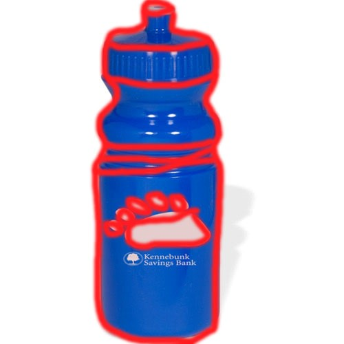

Edits from mid-quarter check: Increased Entry#1 image size, Added observations Entry#2, added additional info for n design Entry#6
Process Book week 1

Family

Athlete
Nature
Animals
Comedy
Process Book week 2
Coping with transition into blindness. In the first video the transition that she goes through is turning blind. She said that it happened to her about a year ago and she had a very rough transition, specifically at the very start. The clear challenge that she faced was the physical one that she couldn’t see, but it went even farther than that, later in the video she mentions that since she didn’t have physical control over her vision she decided that she needed physical control of something so she started being a sort of anorexic. She also mentioned in a part that being blind put a strain on her socially. She said that she wouldn’t feel like going out to parties with her friends anymore because of her blindness. Also I saw that one of her other videos was titled “when sighted people forget you” so I can imagine that there was a strong separation between her and her friends when she became blind. The actual main topic of the video however was the emotional challenges that she faced. She mentioned things such as that she would cry often about it and would often feel depressed that she wasn’t able to do a lot of the things that she used to. She said there are coping techniques that she used to deal with the stress such as riding her bike inside but they would only work when she was up for doing them and she would often just resort to crying. The second video dealt with the several transitions. The first of which was the transition that happened in the 20th century of humans getting better health care and medicine. This extended the average lifetime of people from 45 to almost double that. This transition at first seemed to be all positive but then she mentioned that this caused deaths to be more prolonged with a longer sick stage. This caused a bad emotional impact on everyone that had to spend time in hospitals. The second transition was one that she mentioned that she would want to be implemented but has not yet been fully yet. She wanted to transition from having boring designs for hospitals to better, more decorative designs. She went on to describe that this transition would help make the bad emotional impact from the previous transition better.
I was interested about this so I looked up a picture of a modern hospital and found that a lot of them actually have been working to make better designs.
Process Book week 3
Transition: from attending uw full time to attending uw full time and having a job at the same time.
The beginning state was not having a job and the ending state was working 20 hours a week. I didn’t have any training time in which I worked less than that. The one benefit from this transition was that I had extra money all the time and I didn’t have to worry about going over budget from small things such as ordering an expensive menu item from a fast food restaurant. However, the challenge that I had to deal with when experiencing this transition was that I was constantly rushing to do things because of all the time commitments that I had. The transition could have been made better if I could have improved my time management skills like for example if I had planned ahead when homeworks were due and when I worked both in one calendar instead of two different ones. (canvas and a picture of my schedule)
Transition: from eating food at home to having provided meals but no fridge to constantly be able to snack from.
This is similar to the high school to college transition but more specific. I decided to narrow it down to just the food aspect of it. There was no in between stages since the transition started when I moved out. The benefits from this transition were that if I wanted snacks in between meals I would get to choose them for myself. The challenges faced were that I had to pay for snacks by myself and if I didn’t buy any I couldn’t rely on the snacks that my parents had bought. This meant that my snacks changed from oreo’s and brand name chips to whatever was on sale at safeway. This transition could have been made easier if I had an application that showed my mom how much budget she usually put into getting snacks for me and then allocated that much budget to me when I moved to college so that I could maintain my snack traditions.
Transition: from windows 7 to windows 10
This transition was one that I recently experienced with the goal of trying to make my computer run faster because it had too many programs on it. The beginning state was windows 7, the middle state was the installation process, and the end state was running windows 10. The benefit of the transition was that it let me uninstall all of the extra programs that were not by Microsoft from my computer which freed up a lot of space and made my computer run faster. The first challenge faced was the installation process. It was actually very easy with no problems. The other challenge was getting used to the features of the new windows. I thought this would be a problem since windows 8 was so different but actually windows 10 was very similar and all the changes I think were for the better. Overall I think the only thing that could have made my experience better was an optional tutorial that popped up for the first few days so that I didn’t have to look up features on my own on the Microsoft website.
Transition: From living in a room with 2 other people to living in a room by myself
The transition was immediate with the only middle state being that I moved rooms. The benefits from this transition included things such as privacy and not having to share things with roommates. It was also nice to have the door stay locked when I locked it and went out. The first challenge was moving and this was very easy since I moved rooms to another room in my house. The second challenge was getting used to not staying in my room all the time since no one would be in there anymore and it would get boring very easily. I think something that could have made my transition easier would be some kind of device that would remind me to get out of my room when I had spent too much time in there by myself so that I would go be social.

Transition: From having parents tell me to do homework to having to allocate time for it myself
This is also similar to the high school to college transition but more specific. The beginning state is in high school and ending state is in college and there is no in between. The main benefit from this transition that I liked was that I would sometimes be more motivated to do homework and sometimes not motivated and now that my parents don’t tell me when to do my homework I can identify those times and do homework then to maximize my efficiency. The main challenge from the transition was time management and learning not to procrastinate too much. This transition could have been easier if I had received reminders throughout my day at times that I knew I would be free (in between classes, or at night) that ask me if I feel like doing homework so that I am reminded.
Process Book week 4
This is a picture of my phone. I use it every day for activities such as texting, calling, taking notes, setting alarms, and remembering tasks. Usually I’m the only person that uses it. It has both physical and digital aspects for several reasons. The physical parts on it are firstly, the touchscreen which has to be able to sense finger touches. Secondly, the hardware pieces of it such as the battery, processor and case which are required to make it work. Lastly, something that was mentioned in class was the accelerometer which is a necessary physical part for some of the software applications to work such as the rotation screen digital aspect and is also incorporated in things like games for steering and for shake to activate features.
This is a picture of a coffee maker that is a fairly similar model to the one that I have. I use it usually twice a day, once in the morning and once in the afternoon. I am not the only person that uses it but it has built in functionality for four users and I am one of the four main users. It has the physical components such as the water input container, the coffee input container, the milk input container that needs to be stored in fridge. All of these physical components are important because they need physical care in order to stay operational. There is also another genre of physical components, the ones that are responsible for interacting with the digital ones such as the buttons and the LED screen that displays the settings. There’s the on button, the users button, the cappucinno button, the coffee button, arrow buttons, and a menu button. The digital aspects of the coffee maker are the ones that interact with the button pushes and are what display the user interface on the LED screen. The most complex part of the coffee maker is the multiple users function that stores a specific set of setting for each user for each type of coffee. This is mostly done though pushing the menu button and changing the amounts of each setting type. All of these button pushes shows resulting screens on the LED screen

This is a picture of a microwave that is fairly similar to the one that is in my room. It is used by both me and my roommate and its sole purpose is to heat up food that we intend to eat or microwave water for tea or hot chocolate. The physical components of the microwave are the buttons that are for adjusting settings, the led screen that shows the time, the door that contains the microwaves in the microwave, the dish inside the microwave that always gets off its track, and the machine that makes the microwaves that heat the food. The digital aspects of the microwave are mostly the set of setting that are set with each of the button. Also the built in timer that is adjustable based on how long you want to microwave the food. Finally the settings that display what is supposed to be displayed on the LED screen are also digital.
This is a picture of my laptop, it is a Lenovo 530 that is about 2 years old and it still works fairly well. It is used for mainly school and entertainment purposes and it is used by only me. The most obvious physical aspect of the laptop is the one that I interact with the most and that is the keyboard. There are also several hardware aspects that all interact with the digital aspects. There is the monitor that displays all the content to the user. There is the battery which powers the entire device. The CD drive, the solid state drive that stores all the memory, the motherboard that connects all the parts, the processor, and probably several other parts. The digital part of the laptop is mostly windows 7 which is the installed operating system that connects all of the parts and makes the user able to use the computer by making a user interface that they know how to use. There are also other digital parts in the computer such as all of the programs installed on the hard drive.

Another technology that my roommate and I share is our tv. It is used mostly by us but sometimes by other people as well. The way that it is used most often is by being connected to the Xbox 360 playing Fifa 2015. The physical parts of the TV are the buttons on the side that are for turning on the TV, changing channels, and adjust the volume. There is also the display, and all of the plugs that are for different inputs such as HDMI, and the TV stand. The digital parts of the TV are the software that takes what the input gives them and converts it into a picture to display. Also the software that controls the volume output from the speakers.
Process Book week 5


Gather Ingedients such as 5 eggs, 2 cups flour, bowl, pan, 2 cups milk, whisk, flipping tool, salt, and sugar.
whisk together ingredients, first add in eggs and flour then slowly add in milk and beat until smooth. If still lumpy after 2 cups milk it is ok to add more.

Preheat pan to mid to high heat then pour in about half a cup of mixture then heat for 45 seconds

flip crepe and then heat for another 45 seconds, the top part should be somewhere between brown and white and not burnt but not runny, if it is runny, flip back over and increase heat

after cooked stack on a plate, repeat last 2 steps with each crepe until mixture runs out, keep stacking crepes on same plate as shown on picture to maintain warmth

for each crepe apply some amount of Nutella or other desired topping
roll up as shown in picture and ENJOY!!!

Process Book week 6
In the N version of our project we start with a sign in screen which asks for a user password and user name. This information is then used to lead to their account, which has saved classes. The user sign in portion makes it easy to find all you classes by just typing in two fields.
The idea behind my n+1 version is to have more entertainment functionality to the website. I want to do this by adding the hardest classes and hardest schools functions. The intent of these is to have students look at them to see how hard other classes are at other schools and get to laugh at the ridiculous work load at school such as MIT and Harvard. Having more entertainment added to the site will hopefully increase the amount of users. The other part added was the introduction demo. It is just a link to a short 1-2 minute video explaining the functionality of the website. Its purpose is to make user experience less frustrating if they can’t figure out how to use a feature.
Process Book week 7
One participatory Design experience that I found online was beta game testing for companies like Microsoft. I did one of these when I was younger because they needed both younger and older testers. What you do is go into a computer lab where they have the game downloaded and play for an hour and tell them your thoughts on the game.
The participatory design experience that I want to share with my users would be to gather a group of about 10 users all with different backgrounds, majors, and study habits. We would then show them each of the features that could be implemented on the new husky card (ei: calendar, grades, maps, due dates) and ask them which they thought we useful and which they thought would add to the experience.
(feature associated with a group of questions such as do you think calendar is useful)
We would also ask them things as which do you think are most/least important to see if they all think that the same things are most/least important in order to make the user experience fit to the things they think are most important.
Process Book week 8
Composite:
Storyboard:
State-transition Diagram:
Process Book week 9
The first design decision that I wanted to talk about that we made is making the new husky card thicker. We started with a design that would keep it the same thickness and just add some functionality but then later decided that a lot of the functionality that we wanted to add would not be possible with the current thickness. Such as the display screen. The added thickness of the card however was debated a lot because then it would eliminate the possibility of having a swipable magnetic strip which is currently used for paying for things such as printing. We decided however that it would be worth it to eliminate the swipping feature and instead add in a chip that you can tap to pay.
The second design decision that we decided to implement is whether to keep the husky card simple and only have canvas be able to display on the husky card or to add a feature that would also include a map of campus. This would add more functionality to the card but would be harder to make and involve more software capabilities. We decided that having more uses would be better since the husky card would already have all the hardware that is necessary for the uses. We also added functionality for a calendar and grades section.
The third design decision that we made was whether to keep going with our previous idea of having a program that shows when classmates finish homework and have the people that finish assignments early post how long it took them to do them. We decided not to implement this in the card because it would make the card too cluttered and it would probably not be used as much because there would be no incentive for people to post how long it took them to do the assignment if they finished early.
Process Book week 10
This is a simple no. 2 pencil. I wish I had designed it because its design is simple and effective. It uses very few materials and can be made in a factory with only a few steps but is still used around the world.
I wish that I had designed the portable battery. It also looks very simple on the outside and is used very commonly and can be produced in factories
This is a picture of facebook. I wish I had designed facebook because it probably didn’t take much programming to get a basic version running but was still very practical
This is a picture of pintrest. Although I don’t really use the website I would like to have designed it because I think it has a very visually appealing design.
- List of ways to get better at design:
- Look at past models and similar applications
- Practice making designs of ideas you have
- Practice drawing composites, story boards, and state transition diagrams
- Find a position in the feild
- Expand your knowledge of tools such as photoshop and website design